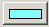

Aby określić opcje importowania bazy MIB, należy użyć preferencji ogólnych.
Aby ustawić preferencje katalogu, należy kliknąć opcję  Preferencje lub wybrać z menu głównego opcję , a następnie z panelu po lewej stronie okna Preferencje kliknąć opcję Ogólne.
Preferencje lub wybrać z menu głównego opcję , a następnie z panelu po lewej stronie okna Preferencje kliknąć opcję Ogólne.
- Jeśli pole wyboru Przeglądaj podkatalogi podczas importu jest zaznaczone, wszystkie podkatalogi są przeszukiwane w trakcie procesu importowania, aby znaleźć wszystkie pliki MIB.
- W polu Maksymalna liczba wątków pliku rozdzielacza podaj liczbę wątków obliczeniowych, które są wykorzystywane do wykrywania baz MIB w trakcie procesu importowania. Może to poprawić wydajność w przypadku importowania dużej liczby baz MIB. Wartością domyślną jest 5.
- W polu Maksymalna liczba wątków analizatora składni MIB podaj liczbę wątków obliczeniowych, które są wykorzystywane do analizy plików MIB w trakcie procesu importowania. Może to poprawić wydajność w przypadku importowania dużej liczby baz MIB. Wartością domyślną jest 10.
- Aby zmienić kolor wyróżnienia dla wyborów dokonywanych w oknie MIB Manager, należy kliknąć ikonę , wybrać kolor z palety kolorów, a następnie kliknąć przycisk OK.